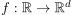
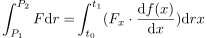
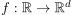

Linienintegral
1. Definition
Sei eine Kurve  und ein Skalarfeld  gegeben
Dann ist das Riemann Integral über der Kurve gegeben durch:
gegeben
Dann ist das Riemann Integral über der Kurve gegeben durch:

1
Sei eine Kurve  und ein Skalarfeld gegeben
Dann ist das Riemann Integral über der Kurve gegeben durch: